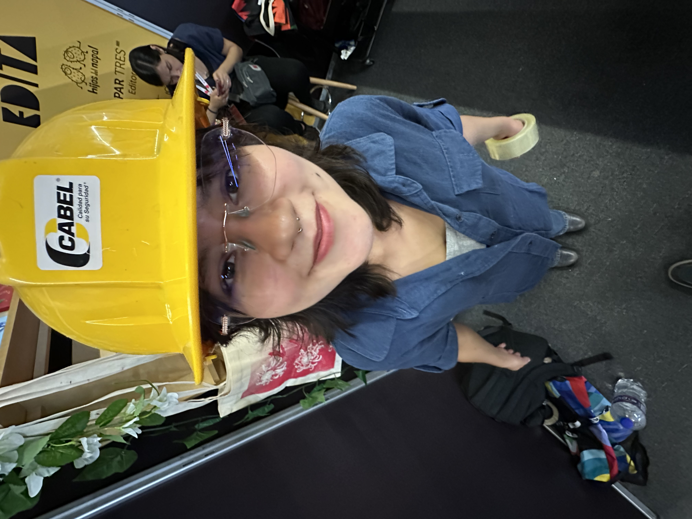
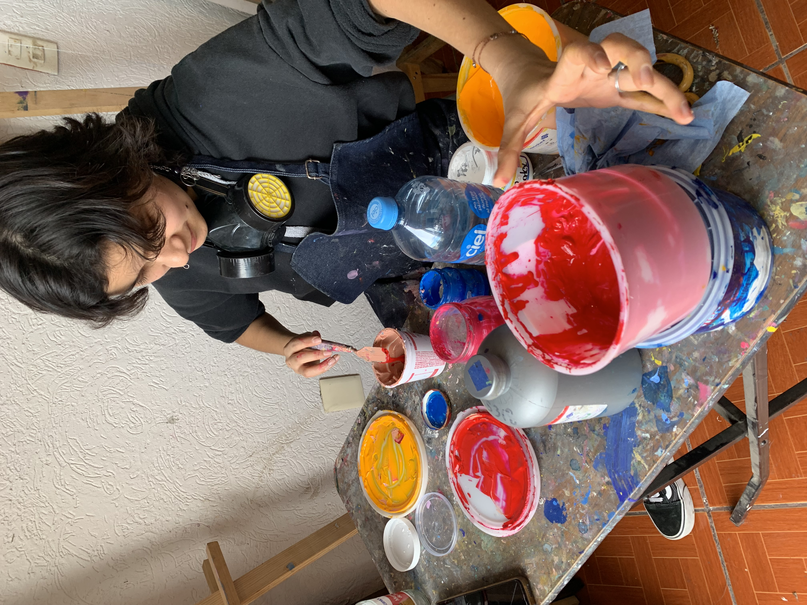

Anaid Monroy
Artista visual · Guadalajara, México
El trabajo de Anaid Monroy explora la memoria, los símbolos afectivos y la tensión entre lo doméstico y lo fantástico. A través de dibujo, pintura, impresión y objetos editoriales, su práctica construye espacios donde lo íntimo se vuelve archivo.
Statement
Mi trabajo parte de la necesidad de conservar imágenes antes de que desaparezcan. Me interesa construir relaciones entre archivo, cuerpo y ficción, utilizando materiales que remiten tanto a lo artesanal como a lo editorial.
Trabajo desde la acumulación, la repetición y el gesto. Pienso las imágenes como superficies sensibles: lugares donde el recuerdo puede deformarse, insistir o incluso inventarse.
Bio
Anaid Monroy es una artista visual radicada en Guadalajara. Su práctica incluye pintura, dibujo, publicación independiente y experimentación gráfica.
Ha participado en exposiciones colectivas y proyectos editoriales enfocados en imagen contemporánea, procesos de archivo y producción independiente.
